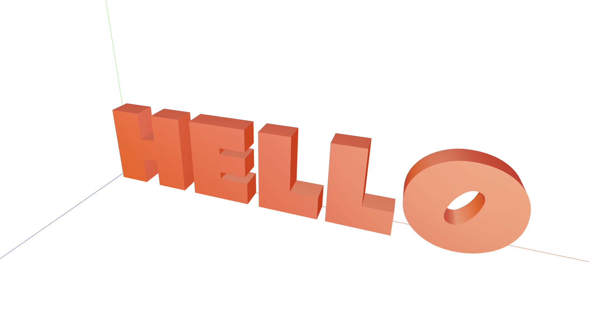
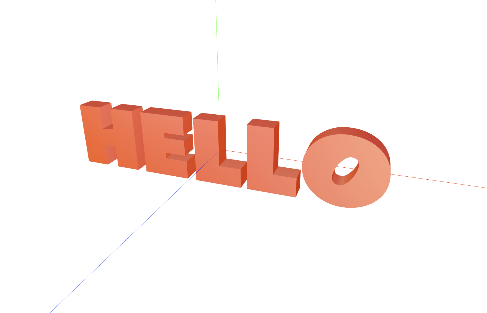

Twisting and bending space with shaders
Everybody likes circles. I personally like anything rounded. And it is impossible to love circles without loving SINes and COSines! Trust me. Because it is the same thing all around(pun intended!)
Sine and Cosine actually describe a circle together.
But lets get back to bending space!
People tend to be frightened by anything trigonometrical, we will take small steps and see how to get in control of 3D universe.
Creating text
Three.js has a built in module to create text geometries, they even called this module TextGeometry, so you won't confuse it with TextAlgebra and TextCalculus 👀. You cant really use a .ttf or .woff file, you will have to convert it to a so called typeface.json format first.
new FontLoader().load('font.json', (font) => {
let textGeo = new TextGeometry(this.settings.text, {
font: font,
size: 1, // fontsize
height: 1, // extrusion
curveSegments: 10, // how smooth the text is
bevelEnabled: false,
});
}
And then just like this you can generate geometrical text!

Usually it will not be centered. So you could just add
textGeo.center()
And now the text will be in center! Thats important because simplifies further transformations.

Now let's twist!
There are a bunch of ways to rotate in three.js, you could distort geometry object itself. But the most performant way is of course to use vertex shaders!
A whats a twist anyway? Its just rotation of vertices around one axis, but with different rotation angle across that axis.
So we can rotate whole mesh around that axis with same angle:
[whole long mesh rotates]
But we can also rotate depending on UV or any other parameter:
[video showing twist of long box]
There are already a lot of snippets to rotate things.
Interestingly we dont even need a 3D rotation for twisting things in 3D, as long as we rotate around one of the X, Y or Z axes.
Usually at the core is this two by two matrix:
mat2 rotate2d(in float radians){
float c = cos(radians);
float s = sin(radians);
return mat2(c, -s, s, c);
}
See, just a bunch of sines and cosines! This one is in GLSL, which is for shaders. But it is actually universal, because it's a mathematical formula. So if you multiply it with a vector(point), you will get a rotatation of that vector.
Because now we have centered geometry with our text, we can use Shader to twist it around X axis:
pos.yz = rotate2d(ANGLE)*pos.yz;
To get the amount of twist, we can calculate bounds of the mesh:
```
geo.computeBoundingBox();
material.uniforms.uMin.value = geo.boundingBox.min;
material.uniforms.uMax.value = geo.boundingBox.min;
```
and then in shader
```
float theta = mapRange(position.x, uMin.x, uMax.x, -PI, PI); // basically number of pivots we want
pos.yz =rotate2d(ANGLE)*pos.yz; // twist
```
So with just a little of trigonometry we got us a twisted text already! Beauty!
[video of twisted text]
Bending space into circle
Now lets go further. We have this `theta` parameter, between -PI and PI.
That means we can map every horizontal point of our text to circle, by using trigonometry!
[sin-cosine gif]
So for every point on X axis, we gonna have Theta angle [0,2PI], and we can calculate corresponding virtual circle point
```
vec3 circlePoint = vec3(sin(theta), cos(theta),0.);
// because circles!
// z is 0, because i want my circle to be in X-Y plane, in front of my camera which is at (0,0,2)
```
But this of course will make us a 0 width 3D object, just a circle. We need to account for y,z coordinates of original mesh. We will do that in two steps, first we move to "circle point" with radius, and then we add an y-z offsets of original positions;
```
vec3 newPosition = circlePoint*RADIUS + circlePoint*pos.y + vec3(0.,0.,pos.z);
```
So to break it down once again: first we map our x axis with `circlePoint*RADIUS`, then we add our y axis offset with `circlePoint*pos.y`. Basically i want to move my Y in the same direction as point on a circle, but with original Y offset of vertex.
And then we just add original z, which is not really changing at all during this transformation. Important that it's all based on geometry along X axis, and we want our circle to be in X-Y plane.
That might have been a looot of X-Y-Zs in one paragraph, but the best way to get a grasp of it, is to try it yourself, and to play with parameters in this formula. Just randomly multiply some of them with let's say 3 or 42, and see whats gonna happen.
The whole code with twisting and making it a circle will look now like this:
``` final code
vec3 pos = position; // copy original
float theta = mapRange(position.x, uMin.x, uMax.x, -PI, PI);
// twist
pos = rotate(pos,vec3(1.,0.,0.), theta);
vec3 circlePoint = vec3(sin(theta), cos(theta),0.);
// bend into circle
pos = circlePoint*RADIUS + circlePoint*pos.y + vec3(0.,0.,pos.z);
```
[final gif]
To make everything look beautiful we would also need to replicate all the transformation steps for NORMALs of the object. Because while we play with geometry vertices, normals are staying the same. And we need them for correct lighting. But thats 99% the same code as for vertices, except its transforming normal.
And here you go, a nice example in r3f you can go and play with. Just locate the shader part, and start playing with trigonometry to learn how it works.
[codesandbox widget]
The end
I hope you liked this small journey into space bending, that is of course just the surface of what you can do. And i urge you to edit files yourself and to feel the power of bending space to your will! Have a good day and stay safe!
[mobius gif with thank you]